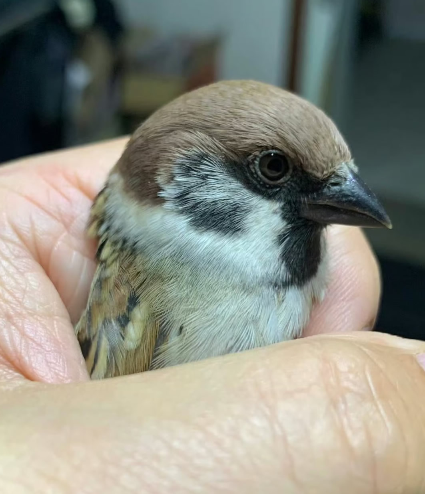

麻雀喜欢栖息在有人类生活的各种生境。适应力强，性活泼，常集群活动；一般在地上、草丛及灌丛中觅食，发出叽叽喳喳的叫声，较为嘈杂。麻雀在地面行进时为齐足跳动。食性较杂，主要是吃种子，有时也会吃细小的昆虫。一些如家麻雀及灰头麻雀也会吃腐肉，绝大部分是杂食性的，以谷粒、草籽、果实为食。通常筑在灌木、乔木、树洞和建筑物下。它们一次可以生多枚卵，双亲都会负责孵化，孵化期为12-14日，雏鸟14-24日大就会换羽。麻雀分布相当广泛，除极寒冷的南北极和高山荒漠，在世界各地均有分布。形容麻雀最典型的生物科学词汇即“雀泛”。